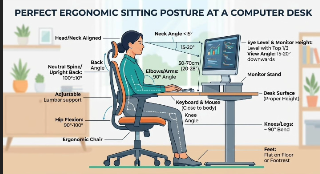

Ergonomia: adaptar o trabalho às pessoas
Neste site você encontra o que é ergonomia, o que torna um ambiente seguro e confortável para trabalhadores, clientes e usuários, e o que a legislação brasileira exige.

Fonte: [colar aqui o URL da imagem]
O que você encontra aqui
- ConceitosDefinição, aplicações e valores da ergonomia (IEA).
- Ambiente ergonômicoO que define um ambiente seguro, postura e checklist.
- LegislaçãoConstituição, CLT, NR-1 e NR-17 com links oficiais.
- Imagens de exemploGaleria de posturas corretas e incorretas.
- IntegrantesQuem fez este projeto.
- ReferênciasBibliografia no formato ABNT.
- Tags e recursosCódigos principais e materiais usados no site.
- Conclusão e dúvidasResumo do trabalho e perguntas frequentes.
Por que isso importa?
A Constituição Federal assegura aos trabalhadores a redução dos riscos inerentes ao trabalho por meio de normas de saúde, higiene e segurança (BRASIL, 1988, art. 7º, inciso XXII). Na prática, isso inclui cadeiras, mesas, iluminação, ritmo de trabalho e pausas pensados para as pessoas, e não o contrário.